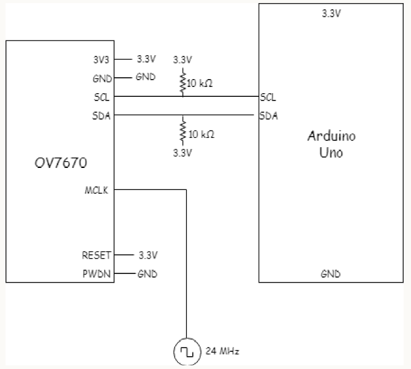
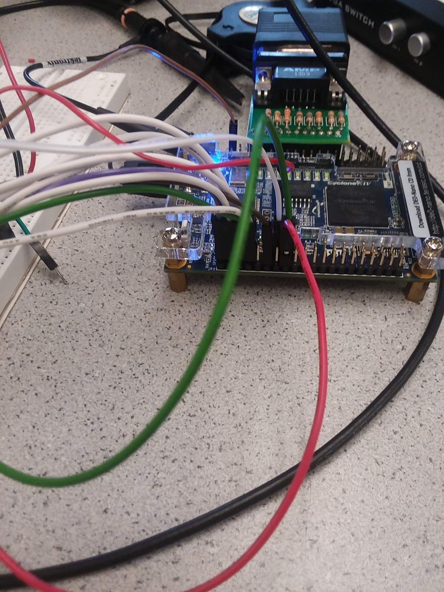
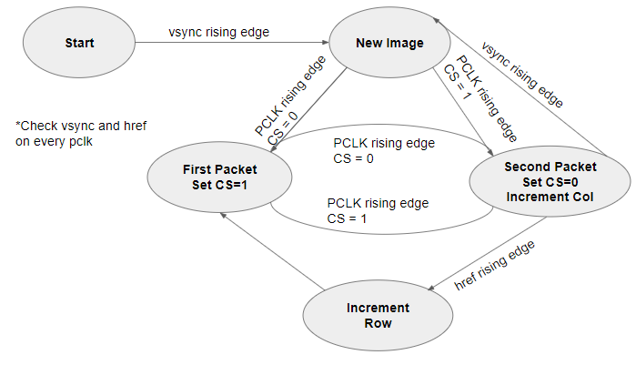
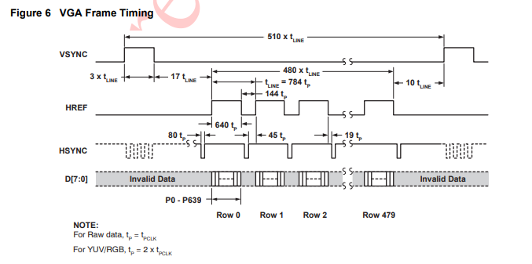
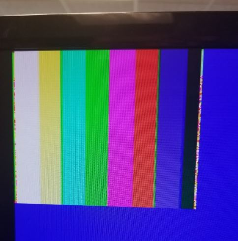

First, we wired the Arduino to the camera. We wired them according to the diagram shown below:

Our FPGA setup is shown below:

Then we assigned the Arduino register values so that we have control for the following tasks:
Vertical and horizontal flip: mvfp
Using an external clock as the internal clock: clkrc
Image scaling: com3
Resolution: com14
Reset All Registers: com7
Use RBG: com15
Colorbar: com17
The registers that we set are MVFP - vertical and mirror flip, the internal clock (CLKRC) external as internal clock, com3 for scaling, com7 for resolution, com15 for RGB, and com17 for the colorbar enable toggle.
Part 2: Saving Camera Data in the FPGA Registers
The key part in correctly saving camera data to FPGA registers is understanding how the timing of the data packets. The vsync signal rising edge indicates the start of a new frame, the href rising edge indicates the start of a new row, and pclk rising edge indicates a new packet of data. A single pixel is represented by 16 bits of data, split into 2 packets of 8 bits. We followed the finite state machine below to determine when to save each data packet.

We determined the timing based on the spec sheet for the camera:

Part 3: Downsampler
We set the camera’s RGB bits to be 565 format, meaning that each pixel is 16 bits with 5 red, 6 green, and three blue bits. We downsampled to a 332 format so that we only need to save 8 bits: 3 red, 3 green, and 3 blue. We did this by writing only the 3 or 2 most significant bits from the camera to the Arduino registers.
To test whether we were displaying the contents of an M9K block on the monitor, we toggled the colorbar bit on the com17 register in the arduino. At first, we were not able to see the correct color or shapes because we had incorrectly assigned the first and second packet data to the FPGA registers. After we corrected our errors, we were able to display the colorbar on our screen.

Part 5: Detecting Color in the Image
When we disable the colorbar bit, we see the camera’s data. We did find that the lighting changes the screen display. This means we need to account for lighting when we begin our color detection.
Part 6: Sending Data from the FPGA to the Arduino
Now that we have our image appearing on the screen and saved on the FPGA, we need to detect blue and red color treasures in the image. We this by checking if each pixel in the image had a red or blue content that was above a given threshold while the other two colors, blue and green or red and green, respectively. We needed to check that the other colors were not present because white would have high values for red, green, and blue. We tuned the thresholds for the pixel values until blue and red pixels were recorded accurately. Then we decided that a treasure was present if 25% of the image contained blue or red pixels. We set two output wires on the FPGA high if there is a treasure, one wire for red and one for blue. The FPGA pins are hard-wired to two Arduino pins, and the Arduino indicated the presence of a treasure on the serial monitor.
Red Treasure Detection:
Blue Treasure Detection
Our next step is to incorporated the treasure detection into our robot code, including shape detection. Then we will improve our maze mapping by implementing a more sophisticated search algorithm.